Izzy and the Midnight Lost-and-Found
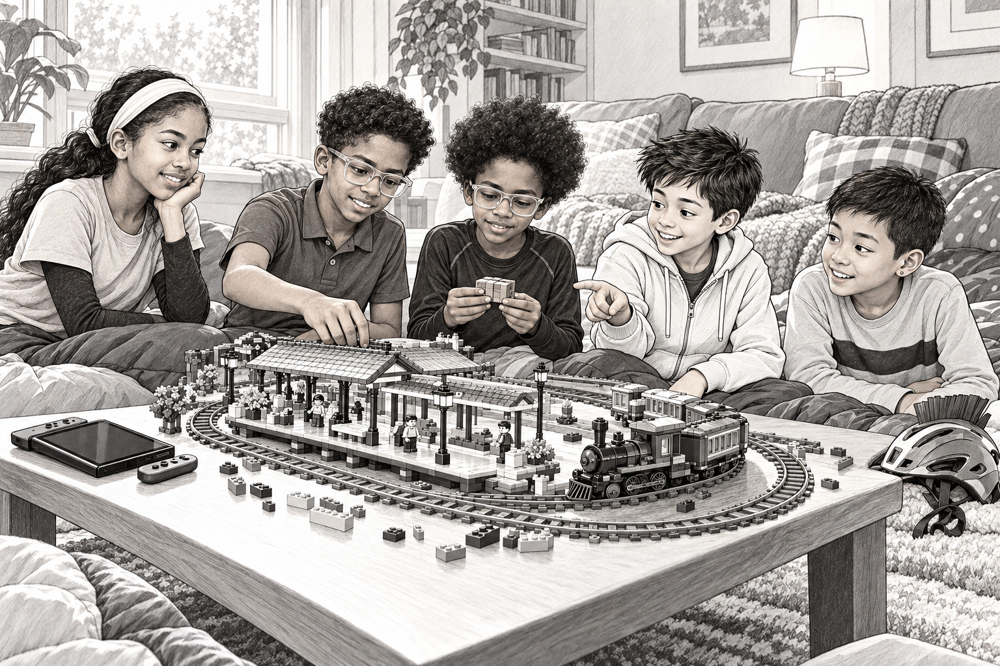
1. Five Players, Four Controllers
The first problem with the sleepover was that there were five people and four Nintendo Switch controllers.
The second problem was Raph.
“I should have this one,” he said, holding up the red controller. “Red is faster.”
“It's a controller,” said Ruth. “It doesn't go anywhere.”
“Neither did your character last round,” Adam added.
Ruth had spent most of that round running into a wall. She said this was an investigation. Nobody believed her.
At a track meet, Ruth could spot a runner speeding up too early from the far side of the field. Apparently, that talent did not help when the runner was a cartoon mushroom.
Wesley handed the last controller to Izzy. “I'll commentate.”
He climbed onto a cushion, sat as straight as a television announcer and cleared his throat.
“Welcome to the championship. Five talented people. Four controllers. One very suspicious wall.”
Izzy laughed so hard that his character fell into a river.
Wesley was about eleven, with a small frame and one shiny stud in each ear. His bicycle helmet waited beside the door. A row of spikes ran down its middle like a mohawk. Izzy always thought it made the helmet look ready to join a dinosaur team.
Five sleeping bags were piled against the couch. Wesley's family had agreed that everyone could stay. There would be supper, a movie and, Wesley had promised, absolutely no shortage of Lego.
There was an enormous shortage of floor space.
A Lego railway wound around the rug. Its bridge stopped halfway across a gap.
“I never finished that,” Wesley said when Izzy looked over. “The bend kept falling down.”
“We'll fix it,” said Izzy.
“After I win,” Raph added.
“Brazil or Argentina?” Izzy asked him. “Best team ever?”
Raph opened his mouth to deliver a very long answer.
A whistle sounded from beneath the couch.
Everyone paused.
“That game doesn't have trains,” said Adam.
Wesley peered under the couch. There was only a sock, a blue brick and a flattened cardboard box.
The whistle did not sound again.
But Izzy could have sworn the unfinished railway had moved.
2. Supper With a Side of Suspicion
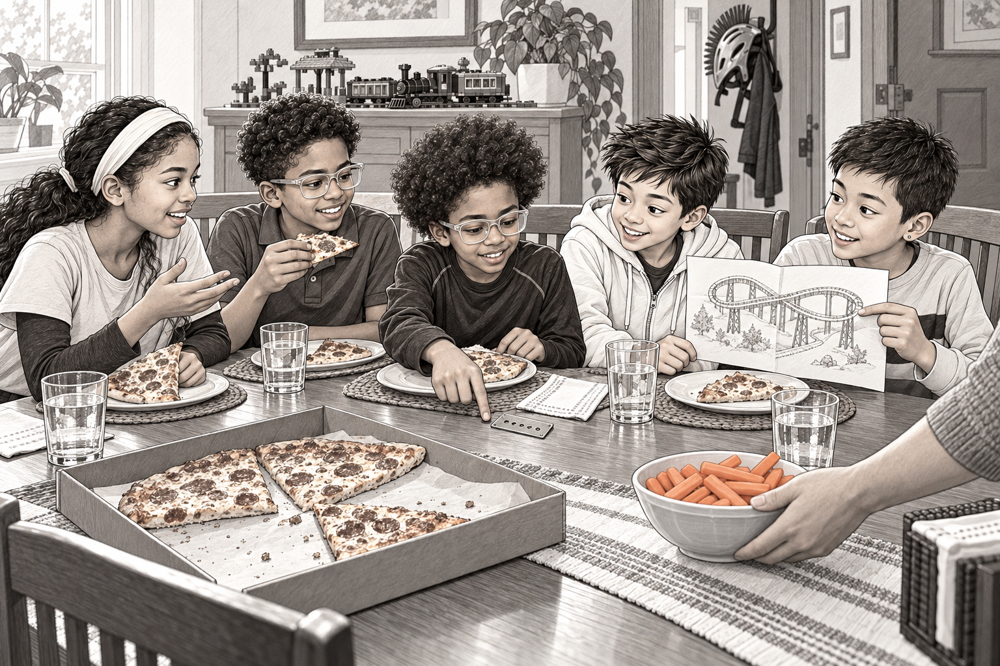
At supper, Wesley announced that their Lego station needed a restaurant.
“Every station needs pizza,” he said.
“Every person needs pizza,” said Raph, reaching for another slice.
Ruth designed an imaginary menu. The soup would arrive in tiny railway trucks. Adam suggested a lost-and-found office beside the restaurant, because a place that served moving soup would lose quite a lot of spoons.
Izzy wanted a goalkeeper at the entrance.
“To stop people?” Wesley asked.
“To save the soup.”
Wesley's dad carried over a bowl of carrot sticks. “If you build this restaurant, please make the floor easier to clean than our rug.”
Wesley slipped a folded drawing from his pocket. It showed a bridge with a strange loop in the middle.
“That was my railway plan,” he said. “From last winter.”
“A spaghetti bridge,” said Raph.
“Exactly. Extremely advanced pasta engineering.”
Everyone laughed, including Wesley. But he folded the paper quickly and tucked it away.
Izzy noticed three short slashes drawn in the corner. Wesley put the same mark on his Lego instructions. He said it was easier than writing his whole name.
After supper, they chose a movie about explorers in a jungle. Wesley's dad brought out popcorn and reminded them where the extra blankets were.
“Movie, teeth, sleeping bags,” he said. “In that order.”
“What about mysterious railway noises?” asked Adam.
“Preferably before the teeth.”
While the others carried their plates to the kitchen, Izzy found something beside his napkin.
It was a tiny metal ticket.
There were five round holes along one edge. On the other side, perfectly neat letters read:
MIDNIGHT LOST-AND-FOUND.
FIVE PASSENGERS. RETURN INCLUDED.
Izzy turned it over. The metal felt warm.
“Wesley?” he called. “Is this yours?”
Wesley shook his head.
From the living room came a very polite little hoot.
3. The Station That Would Not Stay Small
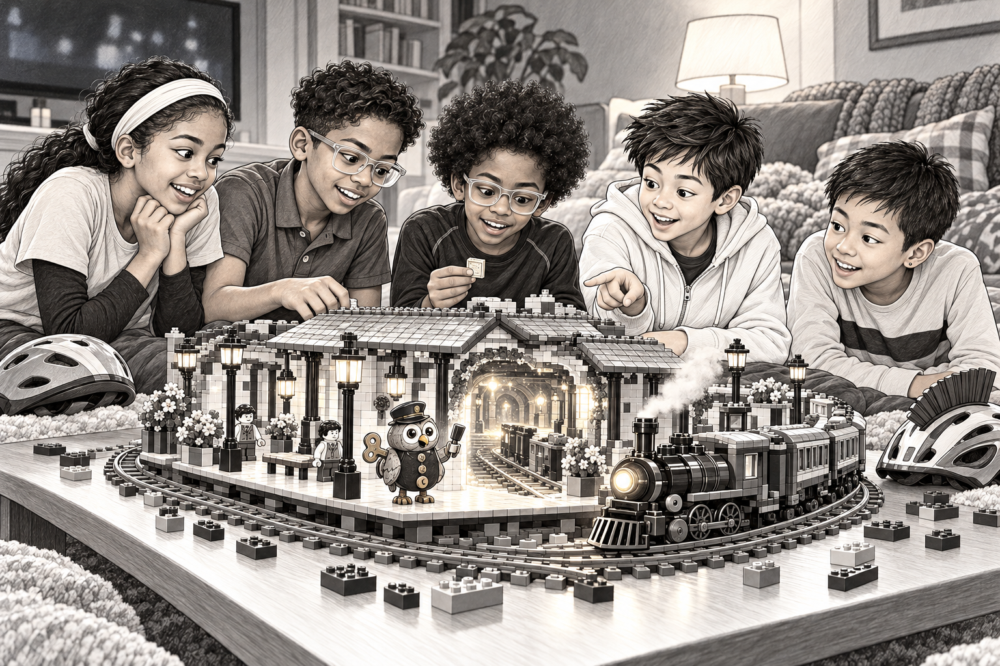
They postponed the movie just long enough to build the restaurant.
Ruth added a clock to the station tower. Raph made a ramp, then tested it with a minifigure who went straight through the restaurant window.
“Delivery service,” he explained.
Adam built the lost-and-found counter. Izzy made a doorway wide enough for the imaginary goalkeeper's enormous gloves.
Wesley connected the new platform to his old railway. At the unfinished bridge, he stopped.
“Still spaghetti,” he said.
Izzy pointed to a pale-blue brick wedged under the platform. “What's that doing there?”
“Holding something up, probably.”
Wesley did not sound certain.
Their helmets had been brought in from their bicycles. Ruth set hers beside the restaurant and decided it looked like a roof. Wesley's mohawk helmet made a much stranger building.
“The dinosaur hotel,” said Adam.
Then Wesley started the movie. The lights dimmed. The opening music rose.
On the rug, Ruth's little station clock began to turn.
A train no longer than Izzy's hand rolled out from under the couch.
Its engine was made from pieces that did not belong together: Lego, a bottle cap, two wooden wheels and a brass key.
On its platform stood an owl.
The owl had round metal eyes and a waistcoat fastened with mismatched buttons. One button was upside down.
“Good evening,” it said. “Are you the builders?”
Nobody answered.
“Five passengers,” the owl continued, looking at Izzy's ticket. “Excellent. Our usual bridge has collapsed. We require an alternative route to the Morning Room.”
It opened a door in the station wall.
Beyond the door was a full-sized platform, glowing yellow under a night sky.
“Helmets, please. Building site.”
Izzy looked back at the sleeping bags. He had expected a good evening. He had not expected the evening to grow a doorway. Wesley held the ticket beside the owl, and its five holes shone like five little windows.
Ruth looked at the owl. Then at the movie. Then at the owl again.
“I'm fairly sure this isn't the jungle bit,” she said.
4. All Aboard the Lost-and-Found
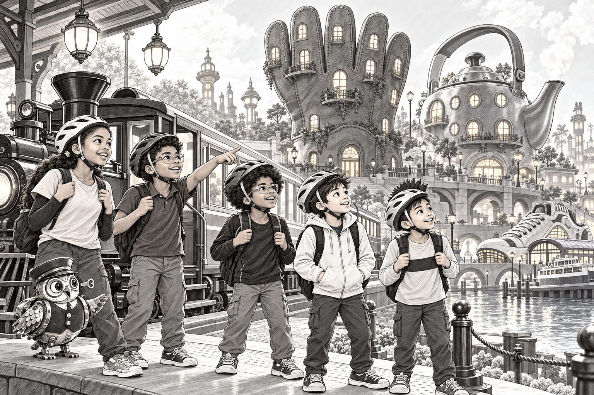
Izzy fastened his helmet and crouched beside the doorway.
When he put one hand through, the doorway stretched. Or his hand shrank. He was not entirely sure which.
“Everyone together?” he asked.
Everyone nodded.
They stepped through, and the rug became a wide grassy plain behind them.
The station now had lamps, benches and a ticket window. Wesley's helmet spikes cast a magnificent shadow on its wall.
Beyond the tracks stood a city built from lost things.
A glove had become an apartment building. Warm lights shone from its five finger towers. A kettle was a hotel, with a balcony around its spout. Beside the river, a single sneaker served as a ferry terminal.
“Where's the other sneaker?” Raph asked.
“Another town,” said the owl. “Long-distance relationship.”
The owl introduced itself as Conductor Clink.
Its train collected lost objects and unfinished inventions. Most cargo eventually found its way back to someone who could use it.
“Things people forget,” Adam said.
“And things people decide to do later,” said Clink. “Later is a very large station.”
Izzy climbed into the carriage. There were sacks of buttons, a paper dragon with one folded wing and a windmill missing a blade.
On a shelf sat a brown parcel. Its label read MORNING ROOM. In one corner were three short slashes.
Adam tapped the mark. “That looks familiar.”
Before Wesley could look, Clink blew its whistle.
“We must arrive before your movie's final credit. This railway borrows a whole film's worth of time.”
Clink pointed upward. “The borrowed film plays in our sky. At home, yours is almost frozen until you return. A long journey here takes only a few seconds there.”
“Like pausing the Switch?” Wesley asked.
“Precisely. Except the pause button is a station.”
“Of course it is,” said Adam.
Across the sky, enormous pale letters drifted like clouds.
Izzy recognized an actor's name.
The train began to move.
Behind them, their Lego station grew smaller. Ahead, every light along the river was red.
5. The River of Almost
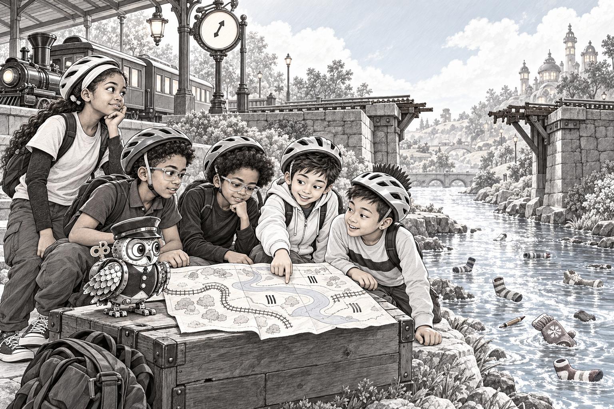
The train stopped at a bridge that had forgotten its middle.
Two stone arches faced each other across an empty space. Beneath them flowed the River of Almost.
It carried pencil stubs, mittens and socks. A very large woolly sock drifted past like a whale.
“Almost a pair,” said Clink.
Wesley leaned over the carriage side. The broken bridge followed a curve he knew.
“That looks like mine.”
“Except yours isn't over a sock river,” Ruth said.
Raph pointed to a narrow path beneath the arches. “We could go around.”
They followed it, pushing the owl's little supply cart. For several minutes, it seemed a brilliant shortcut.
Then it ended at a door.
The door opened onto a cupboard full of more socks.
“Not my finest route,” Raph admitted.
“Excellent cupboard, though,” said Adam.
As they turned back, Wesley stopped beside the river. A mitten snagged on a broken support, stretched the old rope tight and pulled the wood loose. It fell with a splash. The bridge had not simply run out of pieces; the bend had pulled unevenly on its supports.
“We need to watch how it falls,” Wesley said. “Not just how we want it to stand.”
Back at the train, Ruth studied the station clock.
“We've got plenty of time. It's going from twelve to eleven.”
Clink shook its head. “That clock counts time remaining.”
“Ah,” said Ruth. “Then my information was extremely bad.”
They laughed, but Izzy looked up at the sky. The movie had reached a scene with an enormous waterfall.
Adam found an old timetable beside the track. Three short slashes marked a dotted line around the broken bridge.
He held it beside the parcel label.
“Same mark. Same route.”
Wesley pulled out his folded drawing. Its loop matched the dotted line exactly.
But the alternate route went through their own Lego station, where the bridge was still unfinished.
“Why would your plan be on their timetable?” Izzy asked.
Wesley looked at the parcel.
At its corner, beneath a curl of brown paper, he could see one pale-blue brick.
“I think,” he said slowly, “we should open that.”
6. Wesley's Spaghetti Bridge
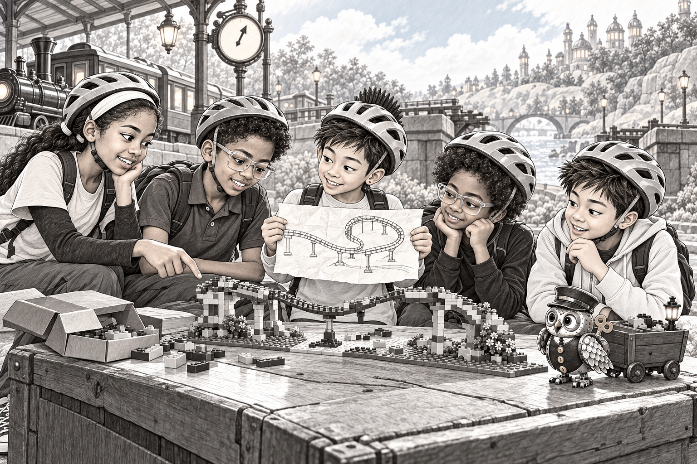
Inside the parcel was a crooked little Lego bridge.
Its bend sagged. One support was missing. Brown tape held a folded note to the bottom.
Wesley stared at it.
“I put this in a box last winter.”
“The box under the couch?” Izzy asked.
Wesley nodded. “I hid it inside the old station platform. Then I forgot where it was.”
Adam unfolded the note.
“To Wesley, when the bridge works,” he read. “From Wesley, who hasn't worked it out yet.”
For a moment, nobody spoke.
Then Raph said, “Your younger self has very good handwriting.”
“My younger self was avoiding building the bridge.”
Clink clicked its beak thoughtfully.
“The station collected the box. Unfinished invention. Addressed to a future builder. Standard night cargo.”
“So Wesley sent it?” Ruth asked.
“And Wesley is receiving it,” said Clink. “Efficient postal arrangement.”
Wesley smoothed a crease in the note. “I thought future me would know how.”
“Future you brought friends,” Izzy said.
“Good planning by past me, then.”
The Morning Room was where those deliveries waited for tomorrow: a chance to try again, rather than a machine that magically fixed everything.
Wesley examined the bridge. “I thought the loop was stupid.”
“It looks like a slide,” said Izzy. “I like it.”
Ruth laid the drawing flat. “The bend needs support underneath. You've only supported the straight bit.”
“I tried two pillars,” Wesley said.
“Then we try three,” Adam replied.
Clink opened its supply cart. There was a ruler, some string and exactly no useful pillars.
“Depot,” the owl announced. “Everything you need. Probably.”
Wesley tucked the note into his pocket.
“We can't all work on the same piece,” Ruth said. “Let's do it like a relay. Find something useful, pass it along.”
Izzy picked up the parcel. Raph took the cart handles. Adam carried the map.
For the first time, Wesley looked excited about his spaghetti bridge.
7. The Depot of Ridiculous Things
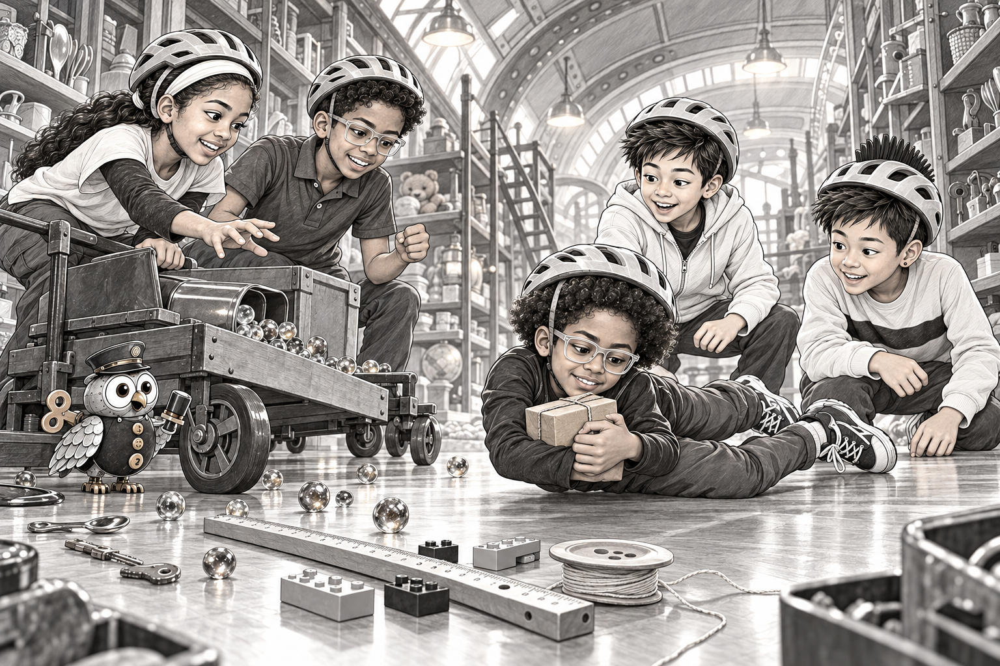
The depot was a warehouse made from an upside-down lunchbox.
Inside, rows of shelves stretched into the darkness. One held teaspoons. Another held keys. A third contained the sort of small plastic pieces adults asked about while standing barefoot in the kitchen.
“Lego,” whispered Izzy, reverently.
Some drawers were labeled MISSING. Others were labeled USEFUL AGAIN. One simply said NO IDEA WHAT THIS IS. Raph opened that one first. Inside was another drawer.
Wesley found three sturdy supports. Ruth chose the ruler for a bridge deck. Adam discovered a spool of string, wrapped around a large button.
Raph located a soft orange ball.
“We can use this to get the string across the gap.”
Clink began stamping their ticket to record the supplies. It stamped the ticket, the cart and, accidentally, its own wing.
“Official wing,” Adam said.
Then a wheel caught in a floor crack.
The cart jerked sideways. It bumped a shelf. A tin of marbles fell with a roar like rain on a roof.
Wesley's parcel shot out of the cart.
For half a second, Izzy saw two things: hundreds of shiny distractions and one small brown box heading toward an open drain.
He watched the box.
Playing goalie for the Storm had taught him that the important thing wasn't always the loudest thing.
He pushed off, reached forward and caught the parcel against his chest.
His helmet touched the floor with a soft clunk. The box stayed dry.
“STORM SAVE!” Raph shouted.
Wesley crouched beside him. “You saved my terrible bridge.”
“Your unfinished bridge,” Izzy corrected.
Clink helped him up and checked his helmet strap.
Above the lunchbox roof, a pale strip of sky disappeared.
Another followed it.
“Why is the sky folding?” Ruth asked.
Clink looked worried. “The movie is moving along. Your doorway is beginning to close.”
They loaded their supplies properly this time.
Nobody needed to suggest a faster walk.
8. The Most Important Pass
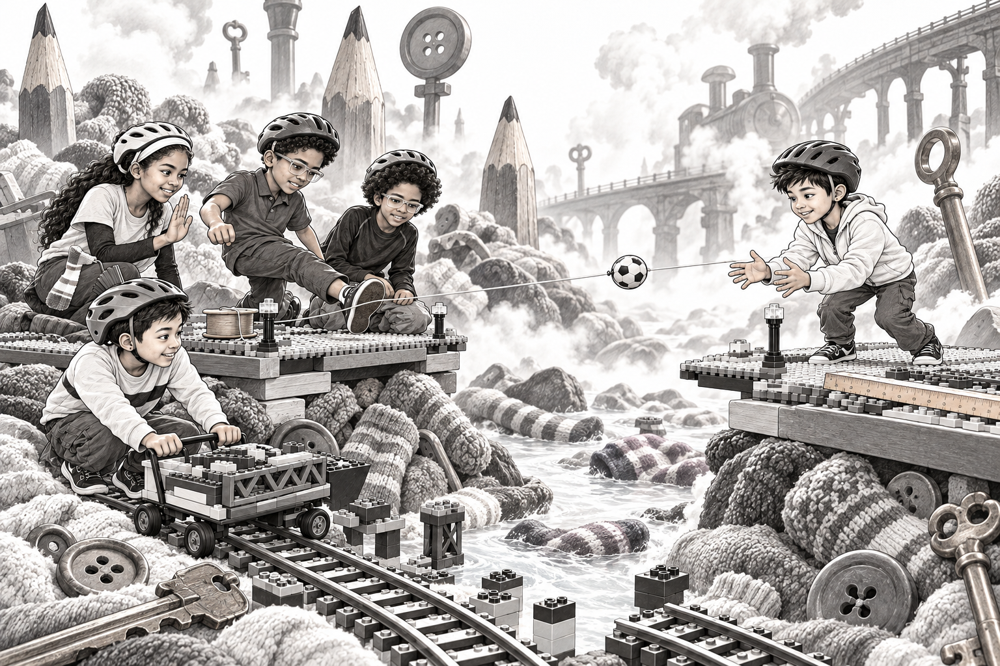
At the alternate crossing, the gap was wider than it had looked on the drawing.
The old station stood on the far side. Its lamps flickered behind drifting steam.
There was a narrow maintenance path around the outside, just wide enough for people. The train needed a bridge.
Adam crossed by the path to the far platform. Ruth followed, carrying two supports. Clink showed them where the bridge would meet the platform.
Raph tied the string to the soft orange ball.
“A spectacular shot,” he announced, stepping backward.
Izzy shook his head. “Adam has to catch it.”
“He will.”
“If you kick it like that, he'll catch it next Tuesday.”
Raph considered the gap. Adam held his hands out on the other side.
“A pass, then,” Raph said.
He sent the ball forward with a careful, low kick. It bounced once on the unfinished deck, rose and landed in Adam's arms.
The string stretched between the platforms.
“Best pass of the season,” Adam called.
“Which season?”
“All of them. Don't let it go to your head.”
Adam tied the line to a sturdy post and tested the knot. Then he noticed a notch in the ruler's edge.
“This end goes here,” he called. “The drawing shows the notch beside the station. If we turn it around, the loop meets the wrong pillar.”
With the guide line in place, they could pull the supply cart across a temporary narrow track.
Wesley steered while Ruth called the timing. Izzy held the line steady. Raph pushed from behind.
A sock floated down and landed neatly on Wesley's helmet mohawk.
He couldn't see it.
Everyone else could.
“You have a flag,” Ruth said.
“Is it a cool flag?”
“It's a sock,” Adam answered.
“I'll accept that.”
They set the ruler on the supports and tested the loop with the loaded cart.
The bend drooped.
Wesley's smile vanished.
“Same problem.”
Izzy lay flat beside it and looked underneath.
“Wait. Your supports are all on one side.”
9. A Bridge With Knees
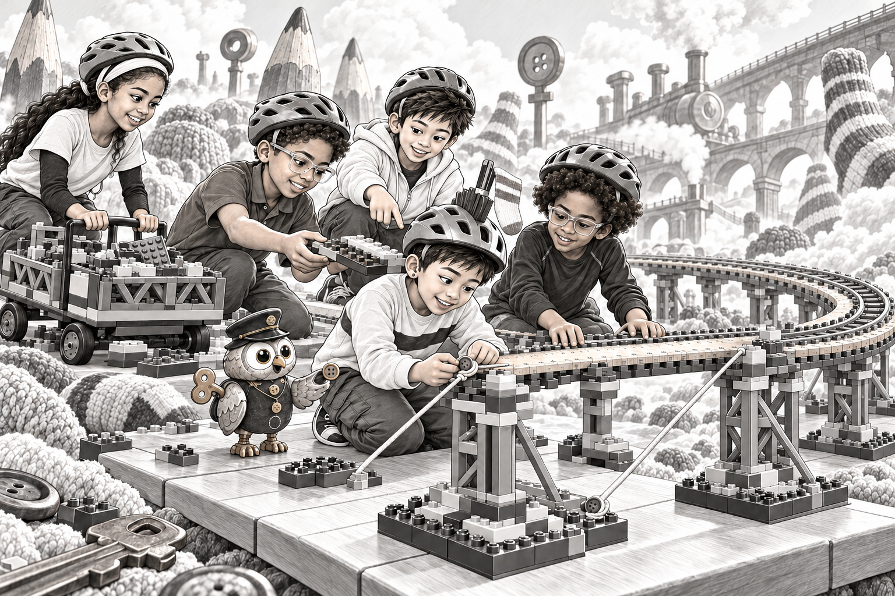
Izzy stood up and planted his feet close together.
“Push me,” he told Raph.
Raph gave him a gentle nudge. Izzy wobbled immediately.
Then he spread his feet and bent his knees, as if waiting in the goal.
“Again.”
This time he stayed steady.
Wesley looked from Izzy's legs to the bridge.
“It needs wider feet.”
“And something holding the bend from both sides,” Ruth said.
They laid the supports farther apart. Adam found two flat Lego plates at the bottom of the cart. Raph slid them along the guide line to Wesley, who attached them beneath the loop.
Ruth set up a relay along the completed platform.
“Adam calls the piece. Raph passes it. Izzy catches. Wesley builds. I move the next load.”
“Very organized,” Clink said.
“Don't worry,” Ruth replied. “Something ridiculous will happen shortly.”
It did. The string spool rolled away and wrapped itself around the owl's feet.
Adam freed Clink while Izzy held the bridge level. Wesley threaded the string along both sides, making two slanting braces.
The loop still looked like spaghetti.
But it stood.
“One tile,” Wesley said. “We need one small flat tile to keep this end in place.”
They searched the cart. There were no tiles left.
Clink looked down at its waistcoat.
With a tiny click, it removed the upside-down button.
“Suitable?”
Wesley fitted it between two bricks. It held the string perfectly.
They pushed the loaded cart over the bend.
The bridge lowered a little, then rose again. Nothing fell.
Wesley let out a breath so long that Izzy wondered when he'd taken it.
“It has knees,” Adam said.
Wesley gave the bend one more careful push. “I kept trying to make it completely stiff.”
“You can't run with completely stiff legs,” Ruth said.
“Or play goal,” Izzy added.
“Or sit comfortably on a couch,” said Raph. “My area of expertise.”
Across the sky, the jungle movie faded to black.
White names began to rise.
“Final credits,” Clink whispered.
10. The Last Train Before the Credits
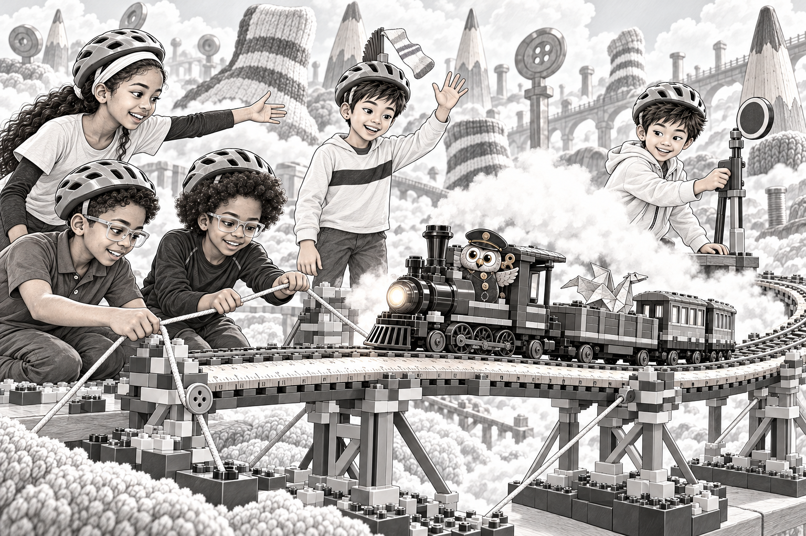
Clink hurried back to the engine.
The friends took places along the platform. Adam watched the far end. Ruth stood where she could see both him and Wesley. Raph and Izzy checked that no string hung over the rails.
Steam drifted across the crossing.
For a moment, Izzy couldn't see Wesley.
Then a sock waved above the mist.
“There!” he said.
Wesley lifted one hand. Ruth passed the signal to Clink.
The train rolled forward.
First wheel. Second wheel. The engine reached the loop.
The ruler deck bent just a little.
“That's supposed to happen,” Wesley said, sounding as if he was telling himself too.
A red sign stood at the far platform. Adam stared at it, then ran around behind it.
“Someone put the STOP side facing the train!”
He turned the sign. The green side appeared.
The engine continued.
A loose string caught beneath the first carriage. Raph spotted it. He pointed while Izzy reached through the platform rail and lifted it clear.
The carriage rolled past.
Then the parcel shelf rattled.
The paper dragon burst out of its open box.
Its one properly folded wing caught the steam. It flapped in a lopsided circle over the train.
“Cargo escape!” Clink hooted.
Izzy wanted to jump for it, but Ruth held out an arm.
“Let it come down.”
Adam opened the empty carriage's door. Raph held up the orange ball. The dragon swooped after it, bounced off its soft side and tumbled neatly into the carriage.
Wesley shut the door.
“Your pass has wings now,” Adam told Raph.
The final wheel crossed the bridge.
Five friends cheered. One owl blew a whistle with such enthusiasm that its hat spun sideways.
At the end of the track, a plain wooden door appeared.
Above it glowed two words:
MORNING ROOM.
11. A Room Full of Second Tries
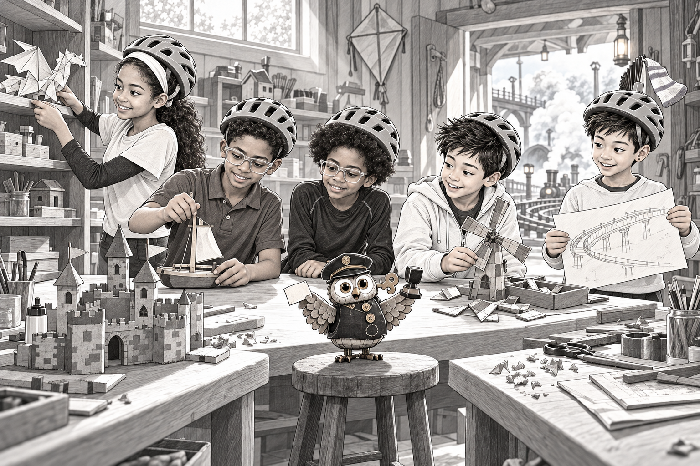
The Morning Room smelled of paper, wood and fresh pencil shavings.
It was not full of treasures.
It was full of things that looked almost finished.
A kite waited for a tail. A toy boat had a crooked mast. A painted cardboard castle was missing its drawbridge.
Small labels hung beside them. Some had names. Some had only a little mark drawn in a corner.
“Where do they go?” Izzy asked.
“Home,” said Clink. “A missing part turns up. An old drawing slides out of a book. Someone wakes up with another idea.”
“You don't finish them?” Wesley asked.
Clink shook its metal head. “Trying is the owner's job. We arrange the return journey.”
They unloaded the cargo.
Adam set the windmill beside a box of spare blades. Ruth helped the paper dragon onto a shelf where someone could unfold its second wing. Raph straightened the boat's mast, then stepped back before it fell the other way.
Wesley kept his old note.
“My bridge already got its second try,” he said.
“Third, technically,” said Adam. “The cart test was alarming.”
Clink stamped their ticket with a large RETURN.
“Where did our names come from?” Ruth asked.
“You all built the station. Each builder leaves a mark, even without writing one.”
“And the ticket?” Adam asked.
“I delivered it. We had a builder's parcel, a broken bridge and five people making a station together. It seemed sensible to ask for help.”
Izzy looked at his friends. Raph's ridiculous ramp. Ruth's clock. Adam's counter. Wesley's railway. His own oversized doorway.
Five people. One way in.
Outside, the last few movie names climbed toward the top of the sky.
Clink opened a little side door. Through it, they could see the couch, the popcorn bowl and one kernel hanging in the air.
“Will we see you again?” Izzy asked.
“Keep building,” said Clink. “And please finish the restaurant. I have heard excellent things about the soup.”
They ran through together.
The popcorn kernel fell.
12. One More Chapter Before Sleep
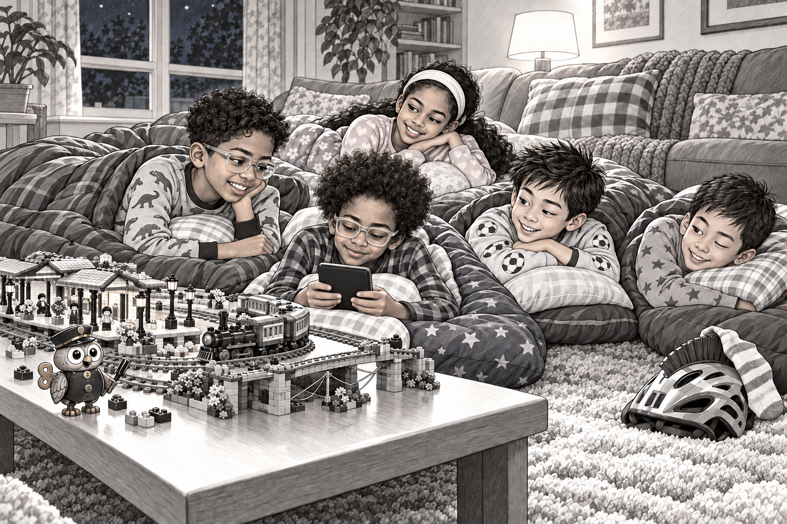
The movie was still playing.
On the television, an explorer was lifting a map. It was the same map he'd been lifting when they stepped through the station door.
Wesley's dad appeared with extra blankets.
“Everybody all right?”
“Yes,” said all five at once.
“Good. Any mysterious railway noises?”
Adam glanced at the rug.
“Nothing we couldn't sort out.”
Wesley's dad nodded as though this was a perfectly normal answer.
On the screen, the explorers argued about which path to take. Wesley glanced at Adam.
“They should check the map.”
“And the cupboard,” Adam replied. “Always check the cupboard.”
They finished the movie. Somehow, the jungle explorers seemed a little less surprising now.
Afterward came teeth, pajamas and an argument about which sleeping bag looked most like a spaceship.
Wesley set his helmet beside the couch. A sock was still caught on its mohawk.
He lifted it carefully.
“Not mine.”
“The railway owes somebody a delivery,” Ruth said.
On the rug, the Lego bridge stood complete. Its loop curved over the railway, supported on both sides.
A small metal button held one end of the string.
The owl figure beside the station had a gap in its waistcoat.
Adam pointed. Nobody said anything for a moment.
Then Wesley unfolded the old note and placed it beside the bridge.
“I think younger me would like this,” he said.
Raph leaned toward Izzy. “That parcel catch was a pretty good save.”
“Your pass was pretty good too.”
“Pretty good?”
“All right. Best pass of all the seasons.”
Izzy settled into his sleeping bag and opened his Kobo. He liked a few pages before bed. Tonight, he kept looking from the story to the station on the rug.
Eventually, his eyes grew heavy. He left the Kobo beside his pillow.
In the morning, he picked it up again before getting out of the sleeping bag.
From beneath the couch came a tiny whistle.
Wesley opened one eye.
“Does anybody remember,” he whispered, “where we left the dragon?”